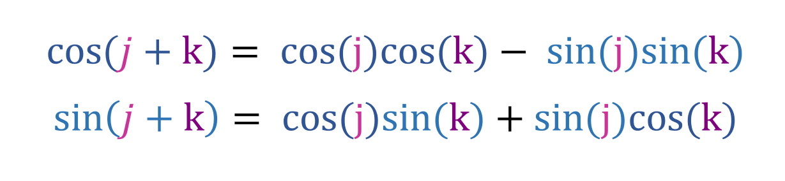
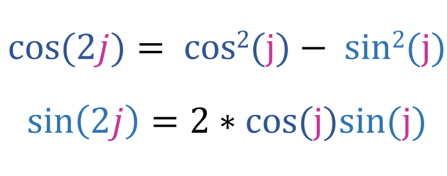
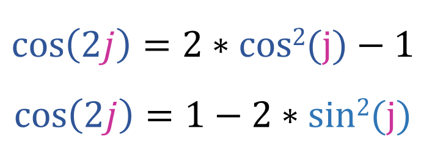
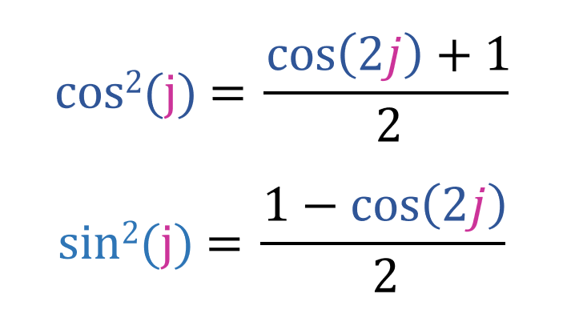

You must already know the addition formula for cos(j + k) and sin(j + k):
Let [k = j], now the above equation will be like this:
This is the addition the double angle formula. Since [cos2(j) + sin2(j) = 1], we obtain an alternative form of the double angle for [cos(2j)]:
Now lets use the above two equation to obtain the half angle formulas:
